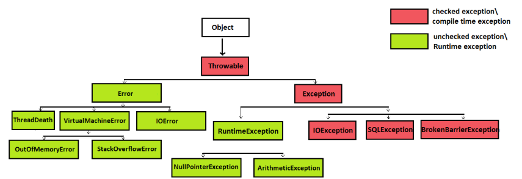
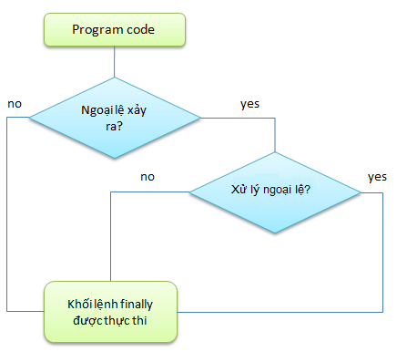

Java Exception Handling

Giới thiệu
Trong quá trình lập trình Java, lỗi (error) và ngoại lệ (exception) là điều không thể tránh khỏi.
Java Exception Handling giúp bạn kiểm soát luồng chương trình khi có sự cố xảy ra —
thay vì để ứng dụng bị dừng đột ngột.
Việc hiểu rõ cơ chế xử lý ngoại lệ, cách tạo custom exceptions và áp dụng best practices sẽ giúp code của bạn
trở nên ổn định, dễ bảo trì và thân thiện với người dùng hơn.
1. Khái niệm cơ bản về Exception
Một Exception là một sự kiện bất thường xảy ra trong quá trình thực thi chương trình,
làm gián đoạn luồng thực thi bình thường.
Java chia exceptions thành 2 loại chính:
- Checked Exceptions – được kiểm tra tại thời điểm biên dịch (ví dụ:
IOException,SQLException). - Unchecked Exceptions – xảy ra tại runtime, thường do lỗi logic (ví dụ:
NullPointerException,ArithmeticException).

Đây là minh họa cấu trúc phân cấp Exception trong Java, bắt đầu từ lớp gốc Object, qua Throwable, chia thành hai nhánh chính là Error và Exception. Các ô màu đỏ là checked exceptions, còn các ô xanh lá là unchecked exceptions (runtime).
“Hiểu rõ phân cấp của Exception là bước đầu để kiểm soát lỗi một cách thông minh.”
2. Cấu trúc try–catch–finally
Java cung cấp khối try–catch để bắt và xử lý ngoại lệ.
Ngoài ra, khối finally luôn được thực thi — kể cả khi có lỗi hay không —
giúp bạn giải phóng tài nguyên như kết nối file, database, hoặc stream.
public class TryCatchExample {
public static void main(String[] args) {
try {
int result = 10 / 0; // Lỗi chia cho 0
System.out.println("Kết quả: " + result);
} catch (ArithmeticException e) {
System.out.println("Lỗi: Không thể chia cho 0!");
} finally {
System.out.println("Khối finally luôn được thực thi.");
}
}
}
👉 Hãy luôn dùng finally (hoặc try-with-resources) để đảm bảo tài nguyên được đóng đúng cách.
3. Tạo Custom Exception
Đôi khi, bạn cần định nghĩa lỗi riêng phù hợp với logic nghiệp vụ của mình.
Khi đó, có thể tạo Custom Exception bằng cách kế thừa lớp Exception hoặc RuntimeException.
class InvalidAgeException extends Exception {
public InvalidAgeException(String message) {
super(message);
}
}
public class CustomExceptionDemo {
static void checkAge(int age) throws InvalidAgeException {
if (age < 18) {
throw new InvalidAgeException("Tuổi phải lớn hơn hoặc bằng 18!");
}
}
public static void main(String[] args) {
try {
checkAge(16);
} catch (InvalidAgeException e) {
System.out.println("Lỗi: " + e.getMessage());
}
}
}👉 Custom Exception giúp chương trình diễn giải lỗi rõ ràng hơn, thay vì chỉ hiển thị lỗi hệ thống.
4. Multi-Catch & Nested Try
Khi có nhiều loại lỗi có thể xảy ra, bạn có thể dùng **multi-catch** hoặc **nested try** để xử lý chi tiết từng trường hợp.
public class MultiCatchExample {
public static void main(String[] args) {
try {
String text = null;
System.out.println(text.length()); // NullPointerException
} catch (ArithmeticException | NullPointerException e) {
System.out.println("Đã xảy ra lỗi: " + e);
}
}
}👉 Multi-catch giúp code gọn hơn khi các lỗi có cùng cách xử lý.
5. Throw vs Throws
- throw: dùng để ném một exception cụ thể trong code.
- throws: khai báo rằng phương thức có thể ném exception để người gọi xử lý.
public class ThrowExample {
static void validate(int age) throws ArithmeticException {
if (age < 18)
throw new ArithmeticException("Không đủ tuổi đăng ký!");
else
System.out.println("Đăng ký thành công!");
}
public static void main(String args[]) {
validate(15);
System.out.println("Hoàn tất!");
}
}“Sử dụng throw và throws hợp lý giúp bạn quản lý lỗi có kiểm soát và rõ ràng.”
6. Best Practices khi xử lý Exception
- Chỉ bắt những exception mà bạn **có thể xử lý hợp lý**.
- Không dùng
catch (Exception e)một cách tùy tiện. - Luôn ghi log chi tiết (
e.printStackTrace()hoặc logging framework). - Dọn dẹp tài nguyên trong
finallyhoặc dùngtry-with-resources. - Tạo custom exception khi cần rõ nghĩa hơn cho người đọc code.
7. Ví dụ hoàn chỉnh: try-with-resources
Dưới đây là ví dụ về cách dùng try-with-resources để đọc file mà không cần đóng thủ công.
import java.io.*;
public class ReadFileExample {
public static void main(String[] args) {
try (BufferedReader reader = new BufferedReader(new FileReader("data.txt"))) {
String line;
while ((line = reader.readLine()) != null) {
System.out.println(line);
}
} catch (IOException e) {
System.out.println("Lỗi đọc file: " + e.getMessage());
}
}
}
👉 try-with-resources giúp tự động đóng tài nguyên, tránh rò rỉ bộ nhớ và code gọn hơn.

Hình minh họa bên dưới cho thấy luồng xử lý cơ bản của try – catch – finally.
Với try-with-resources, phần đóng tài nguyên (thường nằm trong finally) được tự động thực thi, giúp lập trình viên không cần viết thêm mã xử lý thủ công.
8. Tổng kết
Exception Handling là kỹ năng quan trọng giúp bạn viết ứng dụng Java an toàn và đáng tin cậy hơn.
Biết cách sử dụng try-catch, throw, throws và custom exception đúng lúc sẽ giúp bạn kiểm soát luồng lỗi linh hoạt.
👉 Hãy luyện tập bằng cách cố tình tạo lỗi trong chương trình nhỏ, sau đó xử lý chúng theo nhiều cách khác nhau —
bạn sẽ nhanh chóng hiểu sâu hơn về cơ chế Exception trong Java.
“Xử lý ngoại lệ tốt không chỉ làm chương trình chạy ổn định — mà còn giúp người dùng tin tưởng sản phẩm của bạn.”